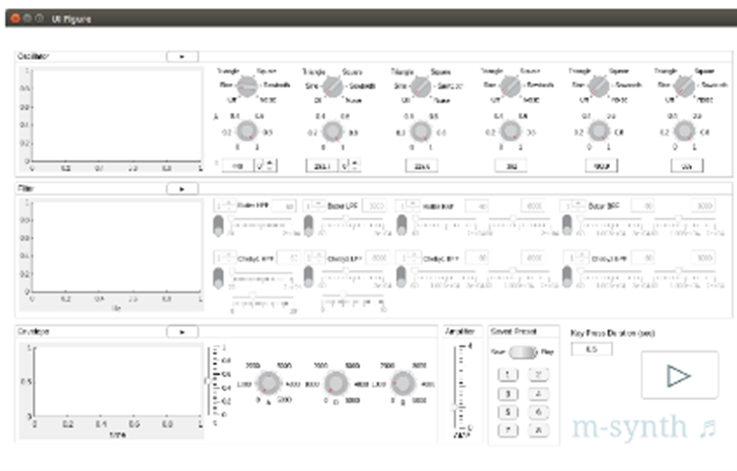

I created the first versions of three ECE core courses at Olin, i.e., those required for the major: Signals and Systems, Digital Signal Processing, and Engineering System Analysis (the latter developed with Professors Chris Lee and Siddhartan Govindasamy). These ECE courses were necessary not only to educate our students, but also to ensure accreditation for our engineering programs. They comprised the signal processing part of Olin’s ECE portfolio submitted to ABET, the Accreditation Board for Engineering and Technology. As a new college, we applied in 2006 for our first accreditation review, a process that recurs every six years after initial accreditation. For Olin’s 2012 ABET accreditation process, I prepared the ABET documentation for Signals and Systems (a required course for the ECE degree). For Olin’s 2012 and 2018 ABET accreditation reviews, I prepared the ABET documentation for Digital Signal Processing (an either/or ECE requirement that can be taken with, or instead of, Analog and Digital Communication).
The ECE courses discussed below—Digital Signal Processing (DSP) and Signals & Systems—share certain attributes with my AHS offerings. Just as I develop a Composer’s Toolkit for students in Wired Ensemble, I give my ECE students a conceptual toolbox applicable to myriad engineering areas of interest. The concepts covered in DSP and Signals & Systems not only underpin the current tech revolution, but also our natural world. My courses peer under the hood of Matlab (a high-performance computing environment for engineers) and convey the reasoning behind numerous built-in commands that allow rapid analysis, design, and prototyping. Since mistakes can occur in computation, it’s fitting for engineers to understand the concepts behind built-in commands, regardless of programming environment, to discern whether the results of such functions, e.g., conv (convolving two discrete-time signals), make sense.
DSP and Signals & Systems are disciplinary in nature (electrical engineering), as shown in Map 2. These courses have helped develop Olin students—while Building & Sustaining the College (Map 1). They also embody my three overarching themes of lifelong learning, intrinsic motivation, and the creative process (Map 3).
What’s special about DSP as taught at Olin?
National Instruments Academic Field Engineer Leslie Yu, DSP course assistants, and I developed a series of labs over the course of the DSP iterations that allowed students to work at their own pace and receive individual help. The first two labs were modeled on the DSP First Labs by McClellan, Schafer, and Yoder. After that, we developed Lab 3 (FIR Filters and Frequency Response), Lab 4 (Filter Implementation and Coefficient Quantization), and Lab 5 (Filter Structures) specifically for our Olin course.
To encourage intrinsic motivation, I give DSP students a long rope with respect to their Final Projects. But I also provide scaffolding in class and individual meetings. For example, for the first half of the term, we have weekly “Application Presentations and Reports” where students research and then prepare a DSP application of interest. Each student gives two application presentations and prepares a short written report on each. Both the presentation slides and the written reports comprise an ever-growing “Book of Apps” that students can access. In fact, many of these application presentations trigger final project ideas (stimulation/impetus).
However, because no rubric existed for either presentation or report, I decided to port over another feature of Wired Ensemble: writing according to a well-defined and professional rubric. I worked with Professor Gillian Epstein to develop a rubric for the DSP “Application Presentations and Written Reports.” The rubric helped calibrate the students.
Next, I extended the Application rubric to DSP’s “Final Project Presentations and Written Reports.” In effect, the research and preparation of the Application Presentations and Written Reports provided the scaffolding for students’ Final Project deliverables which include a project proposal, revised project proposal, written final project report, and final project oral presentation (effective written and oral communication + revision). I provided written feedback on student project proposals and their revisions. I then arranged individual meetings to help calibrate each student and discuss individual questions.
In sum, as a disciplinary ECE course, DSP developed students through three overarching themes: lifelong learning, intrinsic motivation, and the creative process (stimulation/impetus, preparation/scaffolding, applications, feedback, revision, and effective communication). As part of the ECE core curriculum, it helped build & sustain the college, e.g., by contributing to the ABET accreditation process.
Please see the following Supplementary Materials: Fall 2016 course schedule, example course material, and a listing of topics delivered by 48 course materials I developed for DSP students, based on the last iteration of this course.
This document contains examples of DSP assignments, labs, and student work, including a student’s final project, M-synth.
Graphical interface built for M-synth, a final project in DSP.
What’s different about the 2012 and 2019 editions of Signals and Systems? In addition to engineering content, they addressed written communication according to a professional rubric, required revision of written material, and encouraged students to explore applications that pique their curiosity. For the 2012 version of Signals and Systems, I completely re-vamped the course to achieve a fresh perspective. Since its topics pervade contemporary applications, I offered opportunities for research and a final project (lifelong learning, stimulation/impetus, and application). As with DSP, I wanted to provide preparation/scaffolding for the Final Project by giving each student a chance to research and present an application that captured interest. To foster intrinsic motivation, I brought over elements of Digital Signal Processing and Wired Ensemble, such as giving students a “long rope” (lifelong learning). Thus, they had free reign to present any application that employed signals and/or systems, which meant basically everything!
Having 26 students in the class afforded opportunities to learn from one another (lifelong learning) about 26 different applications pertaining to our course material. Furthermore, by virtue of finding an application to present, each student researched several applications, engaging an exploratory process that included self-teaching (lifelong learning), often leading to a Final Project idea, just as it had in DSP.
Yet another feature of DSP and Wired Ensemble—writing according to well-defined and professional guidelines—informed the 2012 Signals and Systems. I prepared “Guidelines for Signals and Systems Application Presentations and Written Reports”, including rubrics for the written application report and the oral presentation, based on the earlier DSP models. This assignment demonstrated our class emphasis on (1) application, (2) written communication, and (3) preparation/scaffolding for the students’ final project deliverables, including a final project proposal, final project demo, and written final project report and oral presentation (application). As with DSP, the application presentations and reports helped calibrate students: they heard/viewed their peers’ presentations, read peer application written reports (all of them accessible), and received written feedback from me. I also met individually with each presenter to give oral feedback and answer any questions.
To further calibrate the students, I gave an example presentation in class and wrote an example report that demonstrated the guidelines and rubrics (additional scaffolding).
Having gained experience and new knowledge with the Application Presentations and Reports, students were now prepared to produce their final projects. First they wrote Project Proposals according to prepared guidelines. I then provided written and oral feedback to each team of students using another feature of Wired Ensemble and DSP—individual sessions—so that they could then revise their proposals, and if desired, their projects.
The goals for the Signals and Systems final project included:
In sum, as a disciplinary ECE course, Signals and Systems developed students by means of three overarching themes: lifelong learning, intrinsic motivation, and the creative process (encompassing stimulation/impetus, preparation/scaffolding, application, feedback, review, and effective communication). Like the DSP course, it helped build & sustain the college and contributed to the ABET accreditation process.
The following Supplementary Materials may be helpful: 2019 course schedule, example course materials, and this document containing a list by topic of course materials developed in 2012 (25 conceptual handouts) and 2019 (an additional 16 handouts) to help students grasp Signals and Systems concepts.
You can find examples of assignments and student work in this document.
Currently, I’m in the process of developing a new course with Professors Chris Lee and Siddhartan Govindasamy: “Engineering System Analysis”, the follow-on course to Quantitative Engineering Analysis II. Working on the first iteration of Engineering System Analysis has been exciting. Profs. Chris Lee, Siddhartan Govindasamy, and I are conceptually and technically aligned as we develop this innovative course to be offered in Spring 2020. Here is the synopsis written by Prof. Lee for our report-out to Olin’s Integrated Project Fund from which we received Summer 2019 funding:
A Mid-Analysis-Stream, Multidisciplinary Course
Diana Dabby, Siddhartan Govindasamy, Chris Lee
We are creating a new multidisciplinary course that would be used by both ME and ECE majors to satisfy one of their respective core course requirements and could be included in plans of study of Engineering majors. The course focuses on building, developing, and practicing process-based quantitative analysis skills in the broad area of linear analysis of engineering systems. The first half of the course is common for all students. The second half is separated into two distinct courses. Students are required to take one of them but have the option to take both. During the summer of 2019, we defined the course structure, identified student learning goals, and outlined the course content. In the fall of 2019, we will create the specific curricular materials that will be used.